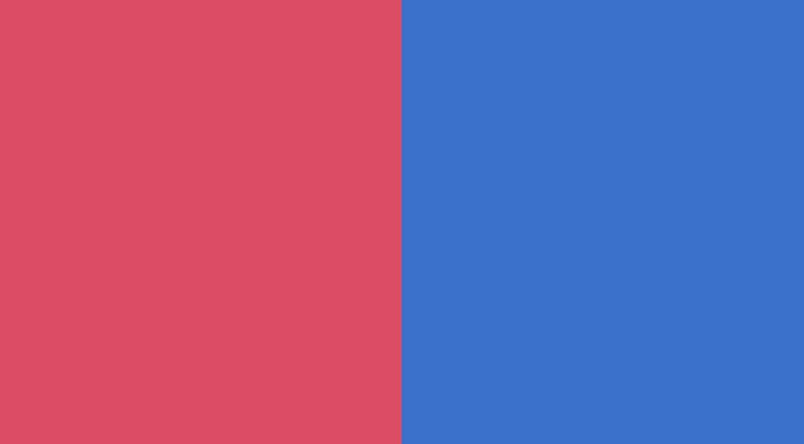

Once again, click the button below and have a look at the final demo of our portfolio.
See the final demoPay attention to the characteristic screen divided into two equal parts. This is a variation of the Full Screen Hero Image, which you know from the previous tutorial.
In this lesson, we will learn a technique that will allow us to create such a Split screen.
Creating a basic Split screen layout in Tailwind CSS is simple, but the complications start with the details.
However, before we get to the complications, in the
<header> section, let's add the
Split screen section, and then let's add the well-known grid,
using .grid and .grid-cols-2 classes.
Note: If you need a reminder about Grid, go back to the Tailwind CSS Grid lesson from the previous lesson.
Add this code to the header section:
As you can see, we added color classes (.bg-red-500 and
.bg-blue-500) to each of the columns. We did this for testing
purposes to see if everything works as it should. Grid elements are
transparent by default, so without it we wouldn't be able to see if our code
is working properly.
However, when you save the file, you'll see that we still have a completely white screen. We'll fix it in the next step.
As with the classic Hero Image, with our Split screen we also want it to always cover the full screen.
So let's add the h-screen class to the grid. It will set the
height of the grid to 100vh units, which means full available
space on the screen.
And done! Simple, right?
Let's clean up our code a bit - let's remove color classes from the grid that we used for testing purposes.
And here we are, again with the white screen. But not for long 😉